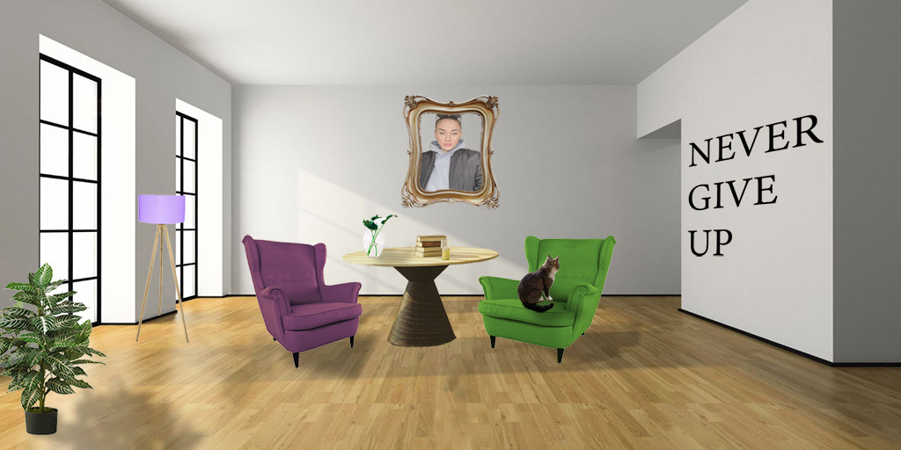
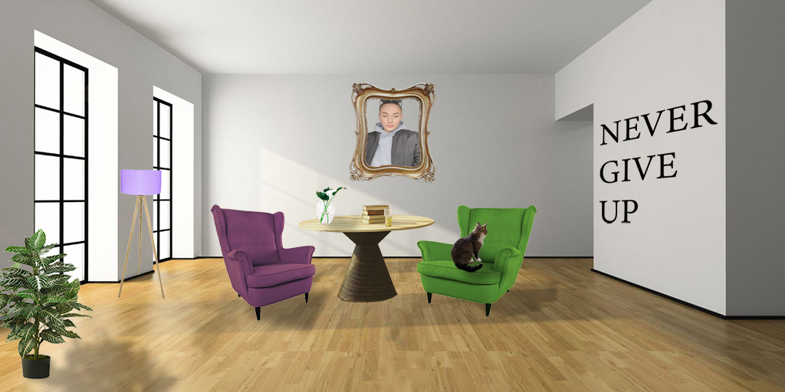

Vektorska grafika
U vektorskoj grafici smo radili sa ilustratorom. Naučili smo razne tehnike koristeći pen, scale, brush..
PDF vjezbi:
Slike vježbi:

Idem drugi semestar GRF fakulteta u Zagrebu, smjer tehničko tehnološki, te sam kao izborni predmet izabrala Digitalni multimedij 1
Govorili su da je naporan kolegij i da ga bolje ne pisujemo, ali sam ga pisala jer već poznajem gradivo kojje se radi, i ne stvara mi nikakv problem.
U vektorskoj grafici smo radili sa ilustratorom. Naučili smo razne tehnike koristeći pen, scale, brush..
PDF vjezbi:
Slike vježbi:
Pixel grafiku smo radili u fotosopu, radili smo retuširanje, koloriranje. Radili smo i kreiranje GIFa pomoću fotošopa i alata za obradu videa.
Ovo su neki od mojih radova što sam radila:
 
Ovo je zadnja cjelina koju smo obrđivali. Obradu videa sam radila u Premiere Pro. Radili smo manipulaciju zvuka, dodavali različite efekte opacity, rotate...
Moj video s vježbi: